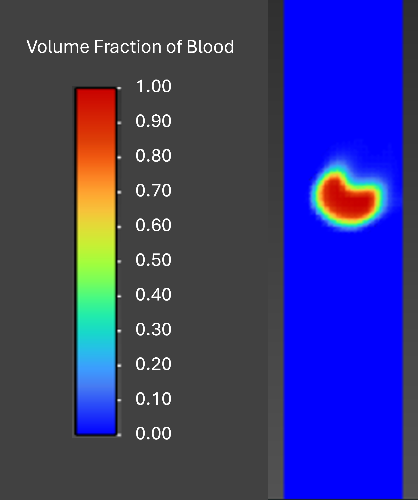
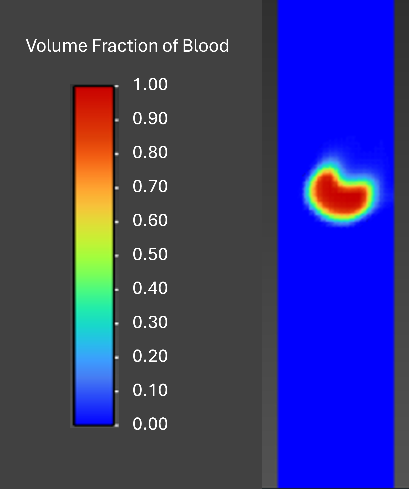

Bio
I am a Master’s Mechanical Engineering student in the Collaborative Haptics, Robotics, and Mechatronics (CHROME) Lab at Saint Louis University, specializing in the integration of mechanical actuators, controllers, and sensors. I currently research novel, wearable haptic systems that elicit clear and calming touch feedback for non-visual guided breathing through vibration, skin drag, and pressure sensations. In addition to haptics, I work on the development of medical devices and manufacturing systems with external partners in the St. Louis region. Beyond my current engineering work, I mentor undergraduate and high school volunteers in our lab to help them develop experience in engineering research and mechatronics.
During my undergraduate studies at Saint Louis University, I graduated summa cum laude with a B.S. in Mechanical Engineering and competed as a Division I baseball athlete. During this time, I also worked as an undergraduate research assistant on an additively manufactured puck enclosure for blind ice hockey. Additionally, I interned at Regal Boats, where I contributed to the design and integration of yacht systems and performed CFD analysis on hull porpoising behavior.


 
